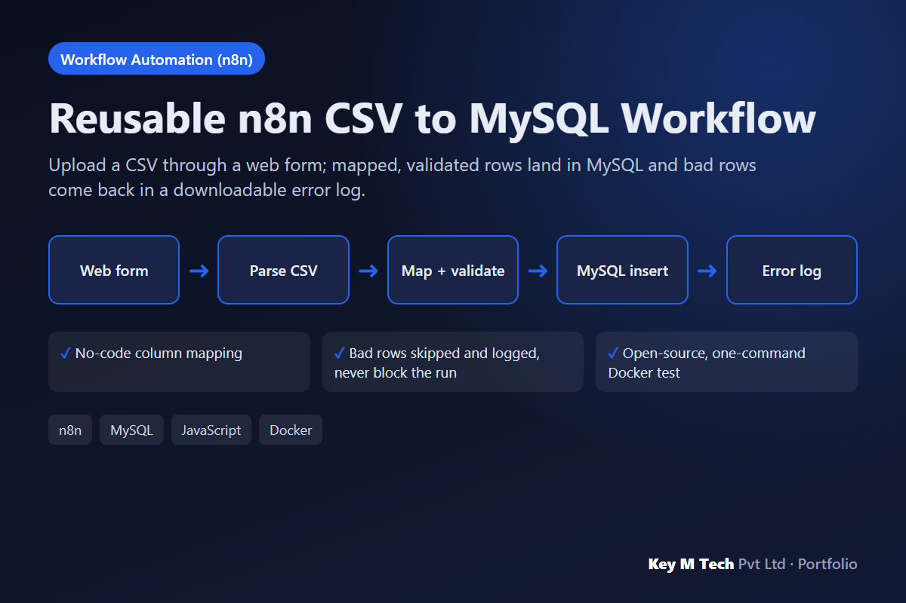

Workflow Automation (n8n)
Reusable n8n CSV to MySQL Workflow
Problem. Teams import CSVs by hand or with brittle scripts. One bad row breaks the whole load, and changing a column means editing code.
What we built. An n8n workflow: Form Trigger upload, CSV parse, a single Settings node for table and column mapping (no code edits), a validator for required fields, integers, numbers, dates and emails, per-row MySQL inserts that catch database rejections, and a results page that returns error_log.csv. Tested end to end on n8n 2.45 and MySQL 8.4 in Docker.
- No-code column mapping
- Bad rows skipped and logged, never block the run
- Open-source, one-command Docker test
n8nMySQLJavaScriptDocker